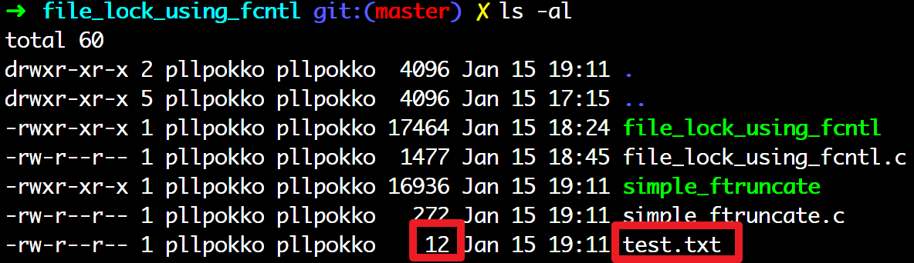

lowlevel I/O <1> read(), write(), open(), posix_fadvise(), ftruncate()
stream
| FileDescriptor | 매크로 | Discription |
|---|---|---|
| 0 | STDIN_FILENO | 표준 입력, 기본 입력 스트림 |
| 1 | STDOUT_FILENO | 표준 출력, 기본 출력 스트림 |
| 2 | STDERR_FILENO | 표준 에러 출력, 별도 메시지 출력용 |
inotify
파일 시스템의 이벤트를 감시하는 inotify
- 최근 리눅스에는 파일 시스템 이벤트 감시하는 inotify
- 리눅스전용, 유닉스 X, 구형 리눅스 X
- inotify 기능의 특징은 특정 파일에 접근, 읽기, 쓰기 등등 다양한 이벤트 감시가능
저수준 파일 제어 시스템 콜
read
#include <unistd.h>
#include <sys/types.h> // for ssize_t, size_t
ssize_t read(int fd, void *buf, size_t bufsize);
기능: fd에 해당하는 스트림에서 Byte열을 읽는 시스템 콜
| return | value |
| 성공 | 읽어들인 Byte 수 0: 파일의 끝에 도달 |
| 실패 | -1 |
| parameter | Description |
| fd | 읽어올 대상 File descriptor fd에 해당하는 스트림에서 Byte 열을 읽음 |
| *buf | 읽어와서 저장할 곳 |
| bufsize | 얼마나 읽을 것임? |
주의!: 문자열 끝에 ‘\0’이 있다고 가정하지 않는 API이다.
write
#include <unistd.h>
#include <sys/types.h>
ssize_t write(int fd, const *buf, size_t bufsize);
기능: 지정한 buf 에서 bufsize만큼 지정한 fd 스트림에 write!
| return | value |
| 성공 | write 한 Byte 수(0이상) |
| 실패 | -1 |
| parameter | Description |
| fd | Write할 대상 File descriptor |
| *buf | 여기서 읽어와서 write할 것임 |
| bufsize | 얼마나 읽어올 것임? |
open
#include <sys/types.h>
#include <sys/stat.h>
#include <fcntl.h>
int open(const char *path, int flags);
int open(const char *path, int flags, mode_t mode);
기능: path에서 지정한 경로의 파일에 대한 스트림을 flags를 통해 어떤 모드로 열것 인지?
| parameter | Description |
| *path | 지정한 경로의 파일에 대한 스트림을 만듬. 즉, 열 대상 파일 path |
| flags | 위 path 파일을 어떻게 열 것인지? |
| mode | 위 flags에서 O_CREAT을 설정했을 때만 유효하다. 새 파일을 만들 때, permission을 지정한다. 지정한 값이 그대로 그 파일의 권한이 되는 것은 아니다. 'mode & ~umask'로 permission이 계산된다. umask 참고 |
| flags | Description |
| O_RDONLY | 읽기 전용 |
| O_WRONLY | 쓰기 전용 |
| O_RDWR | 읽고 쓰기 |
| O_WRONLY O_RDWR을 사용할 경우 | 을 통해 더 flags를 지정할 수 있다. | - |
| O_CREAT | 파일이 존재하지 않으면 새롭게 만든다. |
| O_EXCL | O_CREAT와 함께 사용되어 이미 파일이 존재하면 에러 발생시킴 복수의 프로세스가 동시에 같은 경로의 파일을 만들지 않게한다. 먼저 만든 하나의 프로세스만 파일을 만들 수 있으며, 다른 프로세스는 모두 open()에 실패하게 된다. |
| O_TRUNC | O_CREAT과 함께 사용되어 이미 파일이 존재하면, 파일의 크기를 0으로 만든다. |
| O_APPEND | write() 함수가 항상 파일의 끝에 쓰도록 설정한다. |
저수준 파일 입출력 예제
-
fd_test.log에 이미 100Byte의 데이터가 있다면, 앞부분 53Byte만 덮어 쓰이고 뒤의 47Byte는 그대로 남는다.
- 원래 파일의 내용을 모두 지우고 빈 파일로 열고자 한다
- O_TRUNC 플래그를 더해서 호출하거나 truncate, ftruncate를 사용한다.
fd = open(FILENAME, O_CREAT | O_TRUNC | O_WRONLY, 0644);
- O_TRUNC 플래그를 더해서 호출하거나 truncate, ftruncate를 사용한다.
- 원래 파일 이미 존재하는 경우에 기존 파일을 백업 받고 새로운 파일을 열고자 한다. log 파일들..
- O_EXCL(exclusive open) 플래그 더해서 호출
fd = open(FILENAME, O_CREAT | O_WRONLY | O_EXCL, 0644); - O_EXCL 플래그가 지정 시, 이미 존재하면 open은 실패(-1 리턴)하고 errno는 EEXIST로 셋
- O_EXCL(exclusive open) 플래그 더해서 호출
동기화된 I/O로 열기
- 저수준 파일 처리에서는 동기화된 I/O(synchronized I/O)를 설정할 수 있다.
- 현대 OS는 상대적으로 느린 디바이스들(디스크, 네트워크)에 대해서는 좀 더 빠른 디바이스(메모리)에 캐시하고 나중에 좀 더 한가할 때 실제적인 기록을 하여 동기화를 하게 된다.
- 동기화된 I/O를 사용하면 운영체제는 캐시된 데이터와 느린 디바이스를 최대한 동일하게 유지하려고 노력
- 단점은 응답성 저하, 시스템 성능 저하
- 단점은 응답성 저하, 시스템 성능 저하
- 동기화 방법
- 수동
- 동기화 필요 시점에서 fsync(), fdatasync()함수 호출
- 입출력 발생 시, 자동
- open() 시, O_SYNC, O_DSYNC 플래그 설정
- 수동
| flag | description |
| O_SYNC | 파일 내용과 메타 데이터 모두를 동기화 쓰기만 동기화 함. 읽기는 캐시를 사용하여 좀 더 빠른 응답 |
| O_DSYNC | 메타 데이터 제외하고 순수 파일만 동기화(가볍다) 쓰기만 동기화 함. 읽기는 캐시를 사용하여 좀 더 빠른 응답 |
| O_RSYNC | 읽을 때, 밀린 쓰기 작업 모두 완료 후 동기화 I/O사용 지연된 쓰기 작업들이 완료된 뒤에야 읽기 작업 수행 -> 캐시 X -> 느림 |
- 동기화 I/O 사용
fd = open(path, O_CREAT | O_WRONLY | O_SYNC, 0644); - 메타 데이터를 제외한 동기화
fd = open(path, O_CREAT | O_WRONLY | O_DSYNC, 0644); - 동기화 I/O 사용 + 읽기 작업 동기화 추가
fd = open(path, O_CREAT | O_WRONLY | O_SYNC | O_RSYNC, 0644); - 메타 데이터를 제외한 동기화 + 읽기 작업 동기화 추가
fd = open(path, O_CREAT | O_WRONLY | O_DSYNC | O_RSYNC, 0644);
close-on-exec
- open() 시, O_CLOEXEC를 지정하면 close-on-exec가 설정된다.
- close-on-exec: exec 계열의 함수 때문에 다른 프로세스 이미지로 교체되면서 자동으로 fd를 닫음
- fcntl을 이용한 close-on-exec 참고
- fcntl을 사용하는 것 보다 open()때 해당 fd는 O_CLOEXEC해두는게 편하다.
- 참고! open의 O_CLOEXEC 플래그는 2008년도 SUSv4 issue7 표준에 포함되었다.
따라서 SUSv3 이하 표준 시스템에서는 fcntl의 FD_CLOEXEC로 해야한다.
close
사용이 끝난 스트림은 close()로 닫는다.
#include <unistd.h>
int close(inf fd);
if (close(fd)<0){
/* 에러 처리 */
}
기능: file descriptor 끝
| return | value |
| 성공 | 0 |
| 실패 | -1 |
| parameter | description |
| fd | 종료할 파일 디스크립터 |
- 특정 파일을 계속 입출력하는 것이 아니라면, 사용 후 닫자.
open, close에 숨겨진 과정
- 파일을 열고(open) 닫는(close)는 파일에 관련된 정보를 읽고, 버퍼를 할당하는 과정이 숨겨져 있다.
- 산발적으로 한두 번 쓰는 파일이라면 쓰고 난 뒤 닫아주는 것이 좋다.
- 특별한 경우 제외하고, 모든 프로세스에는 최대 열 수 있는 파일의 개수 제한 존재하기 때문에 파일을 닫지 않으면 나중에 더는 파일을 열 수 없는 상황이 발생할 수 도 있다.
- 최대 파일 오픈 수(max open files)는
ulimit -n명령어로 확인한다.
posix_fadvise(): 파일 사용 패턴 조언
- POSIX에서는 2001년에 파일 사용 패턴 조언추가하였다.
- 열린 fd를 앞으로 순차적으로 읽을 것? 랜덤하게 접근할 것? 한번만 쓰고 다시는 쓰지 않을 것?인지를 알려주는 기능
int posix_fadvise(int fd, off_t offset, off_t len, int advice);
- 순차적 접근: 시스템은 현재 읽은 데이터의 다음 데이터를 prefetch해 미리 가져온다. 최대한 latency 줄인다. 대용량 파일을 읽어들일 때 성능이 좋아진다.
- 한번만 사용: 시스템은 해당 파일을 읽을 때 사용한 메모리를 퇴출하도록 캐시 정책에 반영, 메모리를 좀 더 효율적 사용 가능
추후 보충
ftruncate(): 파일을 지정한 크기로 변경
#include <unistd.h>
int ftruncate(int fd, off_t length);
- 기능: 파일을 지정한 크기로 변경한다.
| return | value |
| 성공 | 0 |
| 실패 | -1 |
| parameter | description |
| fd | 파일 디스크립터 |
| length | 제한할 크기 |
#include <stdio.h>
#include <string.h>
#include <fcntl.h>
#include <unistd.h>
int main(void){
int fd;
char buf[100] = "hello world!";
fd=open("./test.txt", O_WRONLY, 0644);
write(fd, buf, strlen(buf));
ftruncate(fd, strlen(buf)); // 파일 디스크립터에 있는 파일을 문자열 외엔 없애기
close(fd);
return 0;
}
- 파일을 만들고 파일 크기만큼으로 자른다.

- strlen(buf)만큼 크기로 만들어짐

- Hex code